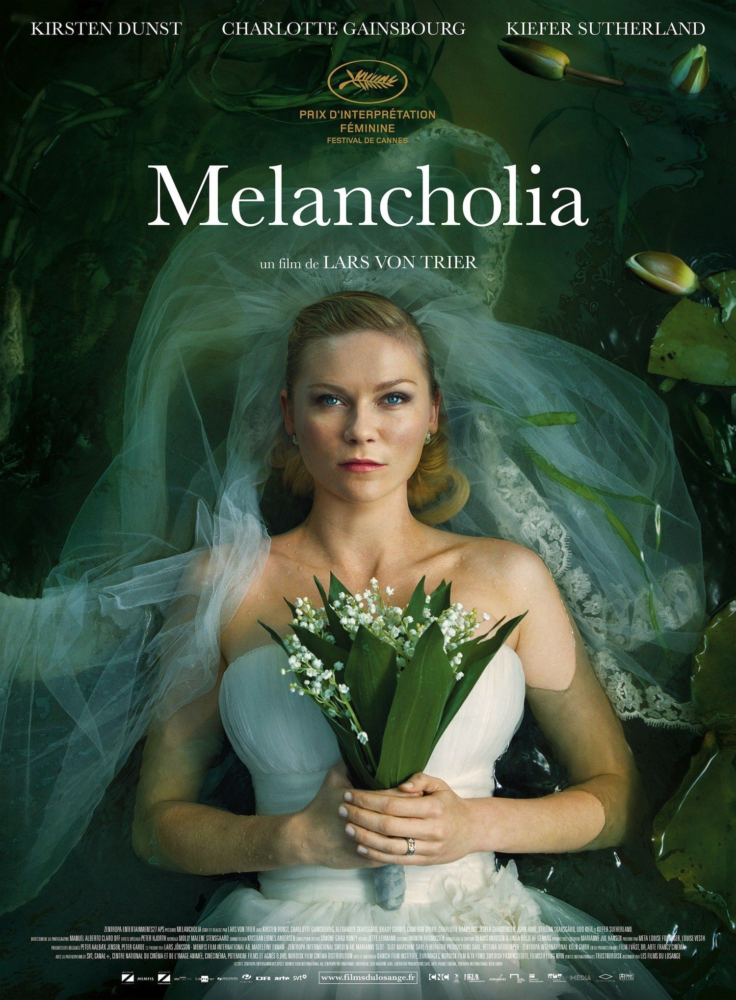

My favorite movies
|  |
MelancholiaL'histoire tourne autour de deux sœurs, l'une d'elles se mariant tandis qu'une gigantesque planète surnommée Melancholia s'apprête à entrer en collision avec la Terre. |

|
Mulholand DriveMulholland Drive est un film à énigme néo-noir américano-français écrit et réalisé par David Lynch et sorti en 2001. Il raconte l'histoire d'une aspirante actrice appelée Betty Elms (Naomi Watts) fraichement arrivée à Los Angeles, en Californie ; elle rencontre et se lie d'amitié avec une femme amnésique (Laura Harring), victime d'un accident, grâce auquel elle a échappé à un meurtre. Le récit propose d'autres éléments apparemment dépourvus de liens mais qui finissent par se connecter de diverses manières ; des scènes et images surréalistes se rapportent également à la narration mystérieuse. |

|
Neon DemonJesse, une jeune fille souhaitant devenir mannequin, se rend à Los Angeles pour réaliser son rêve. Celui-ci tourne très vite au cauchemar lorsqu'elle réalise qu'elle est l'objet de tous les désirs de femmes obsédées par sa beauté et sa vitalité et qui sont prêtes à tous les moyens nécessaires pour s'en emparer. |
About this page
Nothing here :):):):):):):)